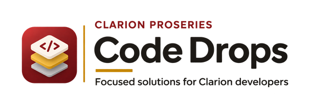

Home | Getting Started | Using the Template | Task Guides | What's New

Focused solutions for Clarion developers.
Sometimes you need one particular capability, not an entire toolkit. Code Drops are affordable, individually available tools that add useful functionality to your Clarion applications without requiring you to develop everything yourself.
Today's development tools and AI assistance make it easier than ever to write code that performs a particular task. But there's a difference between getting something working and turning it into a dependable product.
The first working version is often just the beginning. There are edge cases to consider, different application configurations to test, integration details to resolve, documentation to write, and ongoing maintenance to handle.
That's where Code Drops come in. We do that work so you don't have to.
Could you build something similar yourself? Quite possibly. But how much time would you spend building, testing, documenting, and maintaining it?
When you can buy a ready-made solution for about the price of lunch, why spend hours reinventing it?
Code Drops let you concentrate on building your application while we concentrate on the tools that help you get there.
For more information and to explore the available products, visit the Code Drops website.
For this Code Drop specifically, see the cdWindowDim product page.
Home | Getting Started | Using the Template | Task Guides | What's New